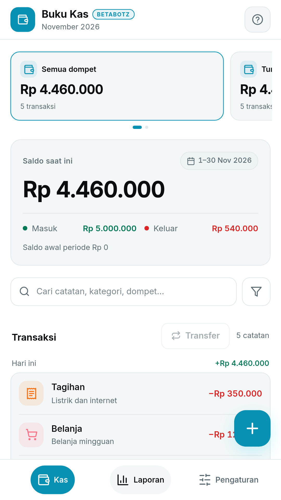

Buku kas & periode
Saldo berjalan periode, pemasukan, pengeluaran, dan daftar transaksi yang dikelompokkan per tanggal.
Buku Kas membantu Anda mencatat pemasukan, pengeluaran, transfer, dan saldo dalam satu tempat. Semua data tersimpan di perangkat Anda sendiri — tidak perlu daftar, tidak perlu internet.

Buku Kas adalah aplikasi pencatat keuangan untuk kebutuhan pribadi maupun usaha kecil. Dikembangkan dan dioperasikan sebagai layanan BetaBotz.
Buku Kas dibuat untuk orang yang ingin tahu ke mana uangnya pergi tanpa harus berlangganan aplikasi cloud atau menyerahkan data keuangan ke server orang lain. Aplikasi bekerja sepenuhnya offline-first: transaksi, dompet, kategori, anggaran, dan laporan dihitung langsung di perangkat.
Tidak ada akun, tidak ada email, dan tidak ada sinkronisasi paksa. Anda bisa membuka aplikasi kapan saja, mencatat transaksi dalam hitungan detik, lalu menutupnya. Jika ingin memindahkan data, gunakan fitur backup JSON atau ekspor CSV/PDF yang Anda jalankan sendiri.
Mulai dari mencatat transaksi harian sampai menutup buku dan membuat laporan — tanpa koneksi internet.
Saldo berjalan periode, pemasukan, pengeluaran, dan daftar transaksi yang dikelompokkan per tanggal.
Kelola beberapa dompet, kategori pengeluaran, dan transfer antar dompet tanpa mengacaukan laporan.
Ringkasan periode, rekap per kategori, grafik arus kas, serta ekspor laporan ke CSV dan PDF.
Periode yang selesai ditutup otomatis dengan snapshot saldo, dan bisa dibuka kembali bila perlu dikoreksi.
Kunci aplikasi dengan PIN 4–6 angka yang di-hash, atau buka dengan sidik jari/wajah di perangkat yang mendukung.
Catat transaksi harian, mingguan, atau bulanan secara otomatis sesuai jadwal yang Anda tentukan.
Buat backup JSON, ekspor CSV/PDF, dan lampirkan satu foto bukti per transaksi. Semua file dibuat hanya saat Anda memintanya dan disimpan di perangkat Anda.
Tanpa akun, tanpa analitik, tanpa iklan, dan tanpa server pengembang. Data tetap milik Anda.
Tidak ada proses registrasi. Pasang aplikasi, atur dompet, lalu mulai mencatat.
Instal Buku Kas di perangkat Android. Aplikasi langsung siap dipakai tanpa login.
Gunakan dompet “Tunai” bawaan atau tambahkan dompet dan kategori sesuai kebutuhan.
Tambahkan transaksi, pantau saldo, lalu buka laporan saat ingin melihat rekap periode.
Buku Kas gratis, tanpa iklan, dan bekerja offline. Sebelum mulai, luangkan waktu membaca Ketentuan Layanan dan Kebijakan Privasi agar Anda tahu persis bagaimana aplikasi ini bekerja.
Tidak. Buku Kas tidak memiliki akun pengguna dan tidak membutuhkan koneksi internet untuk mencatat transaksi, membuat laporan, atau membuka backup lokal.
Semua data disimpan di database SQLite lokal di perangkat Anda. Pengembang tidak menerima salinan data keuangan Anda.
Tidak ada iklan, langganan, maupun pembelian dalam aplikasi. Buku Kas disediakan gratis sebagai layanan BetaBotz.
Buat backup JSON dari menu Pengaturan, simpan file di tempat aman, lalu pulihkan di perangkat baru. File foto transaksi tidak ikut dalam backup JSON.
Tidak. Menghapus aplikasi atau membersihkan datanya akan menghapus database lokal. Simpan backup secara berkala jika data tersebut penting bagi Anda.